A Town, Atlanta, The A; whatever you call it, I love it. Atlanta is one of my favorite cities on the East Coast. At one point in my life I planned to move to one of the suburbs but life happensa and I wasn't able to make the move. From June 19th to June 23rd, 2017, I took a trip to Atlanta, GA. I have been quite a few times growning up since I have relatives in the area but this trip was by far my favorite. I took the trip as a solo celebration of my 30th birthday.
June 19th
I drove that long expanse of highway to Atlanta. I left in the morning around 10 am and I made it to my hotel at around 6. I spent the drive just enjoying my own company. I speant 6 hours singing and dancing to Pandora, stopping for my first time at Zaxby's, and just enjoying the views.
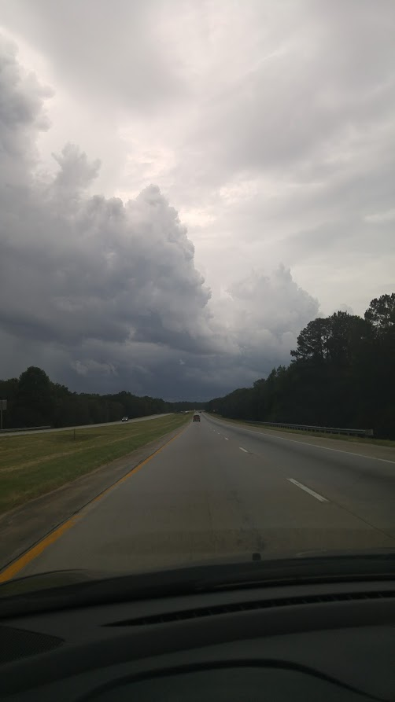June 20th
My first full day and I wasted no time. My hotel was in Norcross so I made it to downtown Atlanta in 20-30 minutes. There was hardly any traffic. I knew I wanted to get a CityPass (click for link) and if you've never bought one, I recommend them. First stop was to get a City Pass and decided to take a tour of the CNN Studios. Truly, it wasn't the most interesting thing to do but it was something.
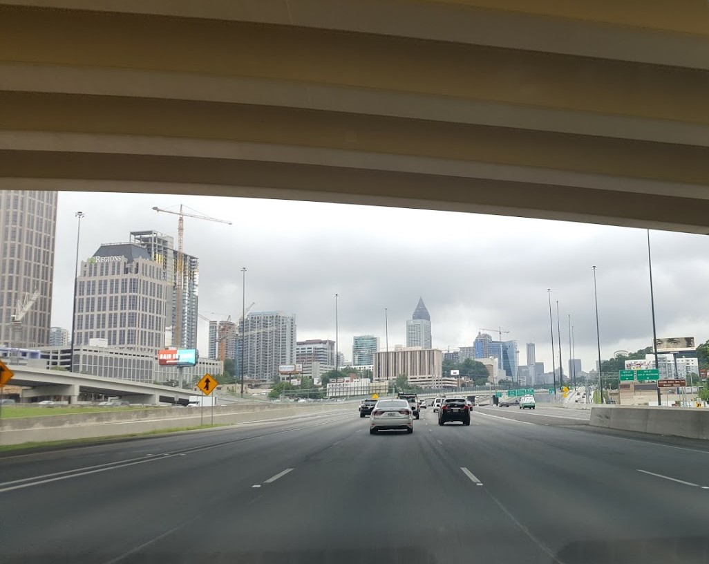 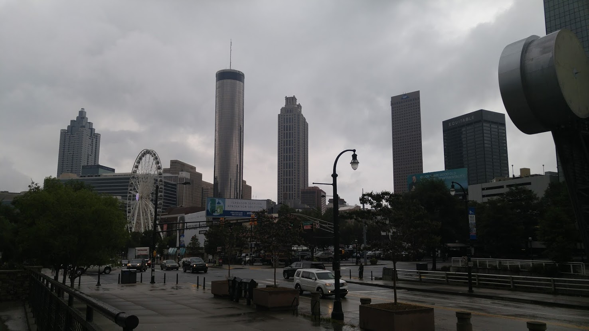 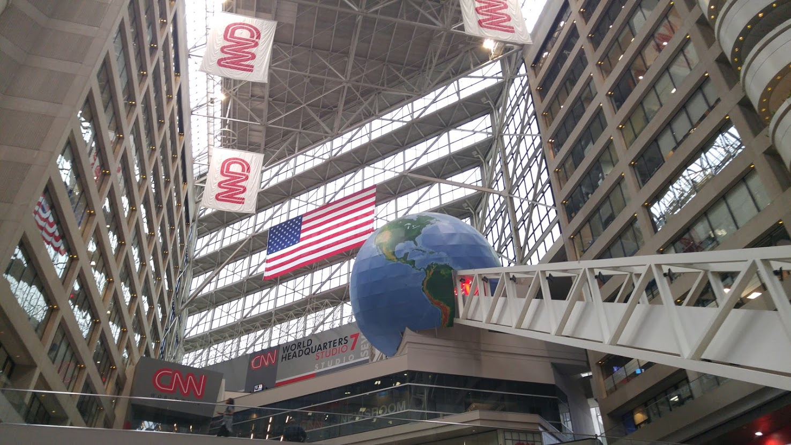June 21st - My Birthday!
I started decided to go to 2 attractions, World of Coca Cola and Georgia Aquarium. If you're not familiar with the locations they are walking distance away from each other. I started at the World of Coca Cola. This was the third time that I had been but I still visited every area like it was my first time. My favorite area is the tasting room. You can sample all of the flavors of Coke from all over the world. Some are great, some are horrible. There is one in particular called Beverly that I just wanted to watch other people try and their reactions were completely worth it. If you want to get an idea, Go here. Make sure to watch.
After the soda tasting, I took a quick walk over to the Georgia Aquarium. I just love water so aquariums are amazing. I looked at all of the sights and even took a behind the scenes tour.
June 22nd
This was my recovery day. I spent it resting in the hotel. I was so sore from al of the walking I did on my birthday and I also wanted a day to relax. I was supposed to go to the Fenbark Museum of Natural History and I believe I still have the ticket even though it's expired.
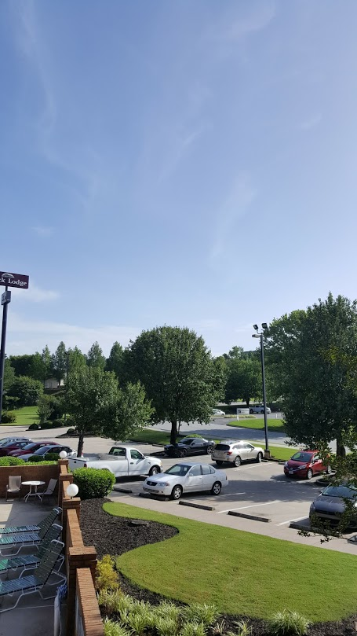June 23rd
This was probably the best day of the trip with the exception of the heat. Zoos are probably my second favorite attractions, behind aquariums. I spent the entire day looking at animals. I had such a blast. And after I left I got to visit my cousins and saw pne of their spoken word performances. I hadn't had the chance to visit in over 10 years so I was glad we could meet up.
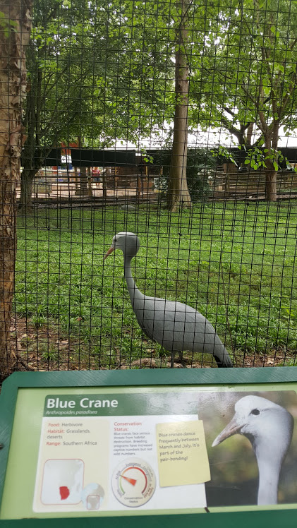 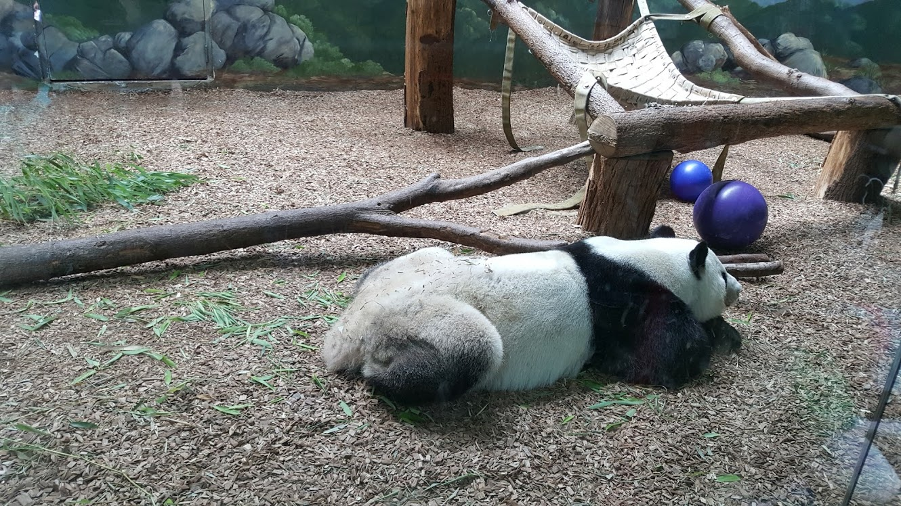 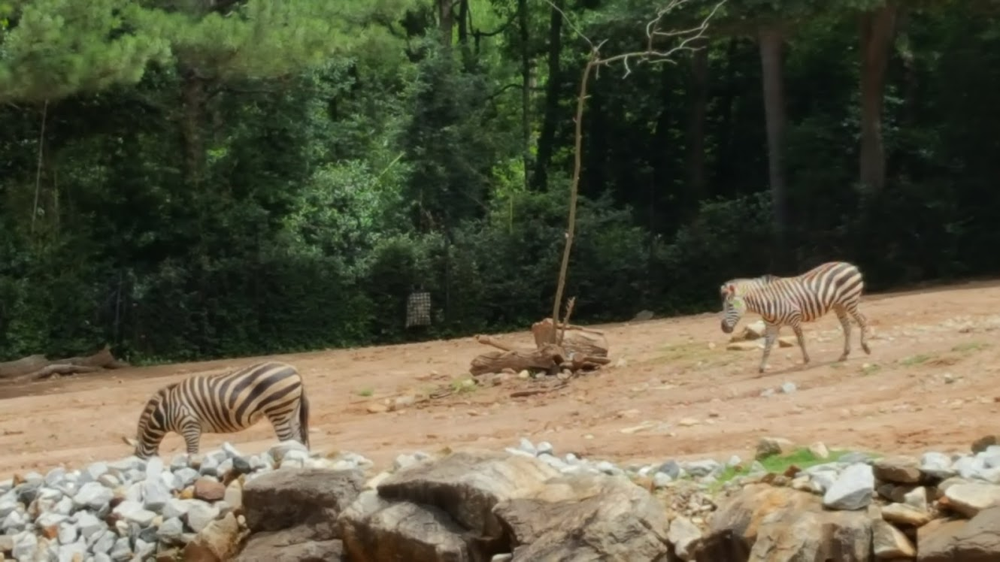 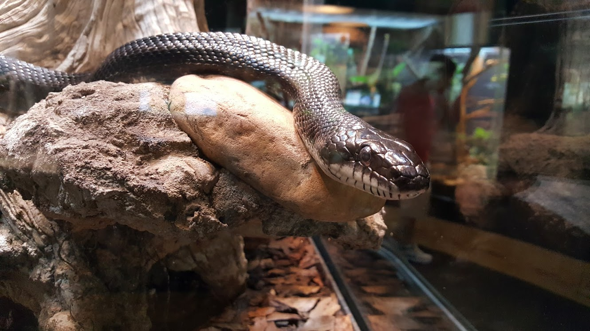 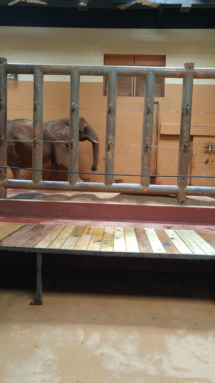 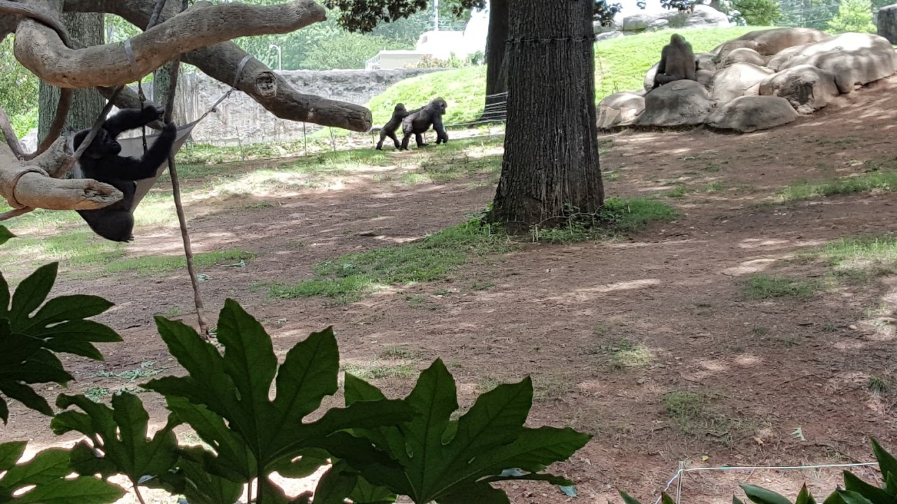June 24th
By the 24th, I was exhausted and I was ready for my own bed. I originally planned to leave on the 23rd, but after the performance I was too tired to make that trip back so I stayed another day. I left later than I planned so I made it home later than I wanted to. And I didn't sleep well so I was tired. That's a long drive to make sleepy. Thankfully, I was able to talk to my family for thr trip back and they helped keep me awake.